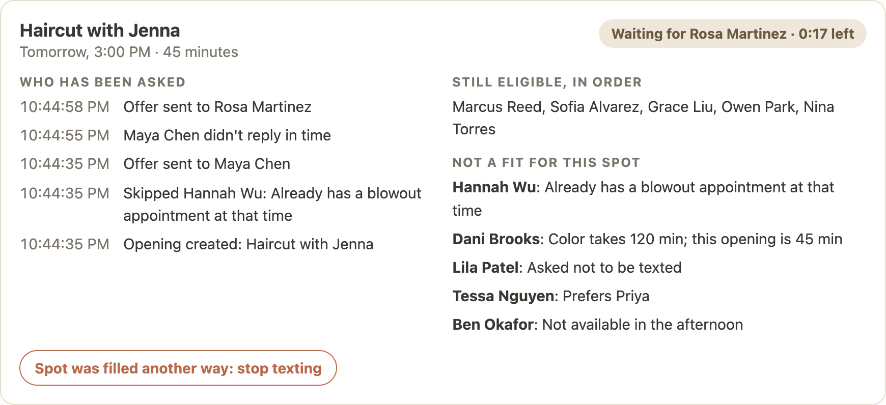
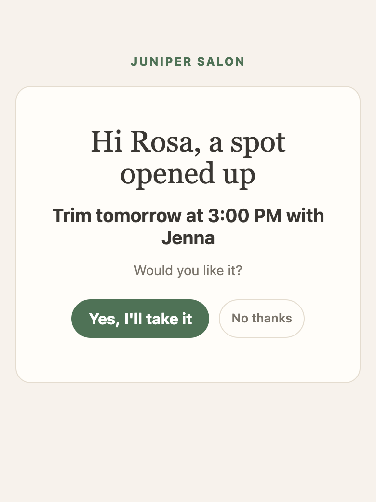

What we heard from you
“Sometimes we lose track of who was contacted, and the opening stays empty.”
tricky cancellations a week, most with under 48 hours' notice
people on your waitlist at any time
What would success look like? Fewer empty gaps, and less time spent chasing people.
What the prototype does

Your screen: who has the offer and how long is left, who was asked, who is next in line, and why someone was skipped.

What a client sees when she taps the link in her text.
What we built for the messy moments
Only one gets the spot. The other is told right away it's gone.
After about 15 minutes for same-day spots, it tells them it's gone and moves on.
It tries again, then moves to the next person. You can see what happened.
One button stops everything. Anyone waiting on an offer is told.
The spot reopens and goes to the next person in line.
A banner tells you within seconds, so you know to go back to the sheet and phone.
Always: no one is asked twice for the same spot, no one who asked not to be texted is contacted, and nobody with a clashing appointment is offered the spot.
Being clear about what's real
A practical next step
Fewer empty gaps, and less time spent chasing people. You don't have a dollar figure yet, so we'll start by counting empty spots and staff time.